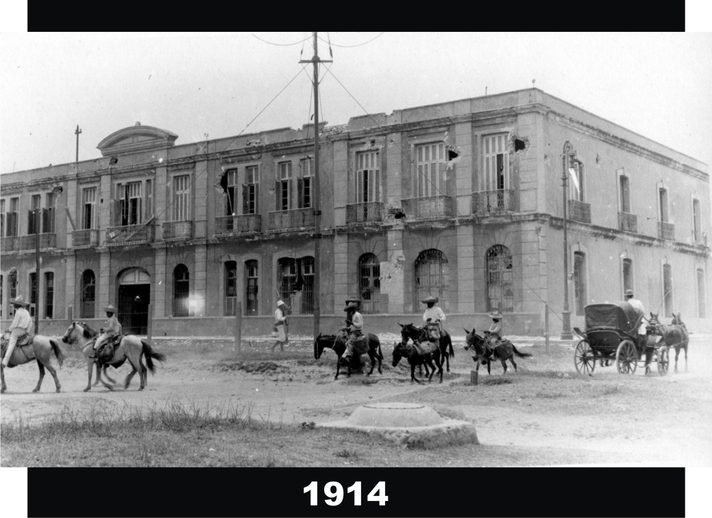
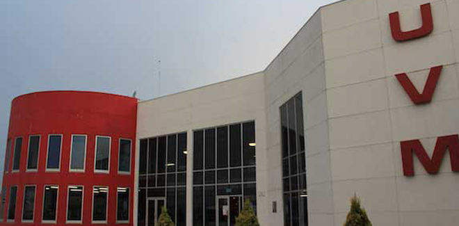

CARRERAS QUE QUIERO ESTUDIAR

-
CARRERA DE LA HEROICA ESCUELA NAVAL MILITAR
clic para mas información
-
CARREA DE INGIENERIA EN MECATRONICA
clic para mas información
-
FUERZA AEREA
clic para mas informacion
Datos Personales
CBTis 16
Mariely Flores Flores
4° "H"
DAM
Jose Antonio Gomez H.
Aplicacion Once
Carreras MFF
CARRERA DE LA HEROICA ESCUELA NAVAL MILITAR
La formación de Oficiales Navales, tiene sus orígenes desde el año de 1825 con la Academia Naval, ubicada en Tlacotalpan, Veracruz. Después de algunos cambios de ubicación, en 1890 el brigadier José María de la Vega González, Jefe de Departamento de Marina, de la Secretaría de Guerra y Marina, presentó el proyecto para la creación de una Escuela Naval Militar, donde se imparta la educación teórica y práctica para quienes se desempeñan como Oficiales y Maquinistas de los buques de la Armada Mexicana.
 Esta escuela cuenta con instalaciones en:
*laboratorio de electrònica
*Areas verdes
*edificio Administrativo
*Auditorio Interactiv
*Laboratorio de Inglés.
Entre muchos mas.
No obstante tambien realizan diversas actividades. Las actividades consiste la vida del Cadete y se clasifican de la siguiente manera:
*Actividades Rutinarias
*Actividades Extramuros.
Mas Informacion Sobre la carrea
Aplicacion Once, MFF
CARREA DE INGIENERIA EN MECATRONICA
Existen varias Universidades que tienen esta carera, algunas de ellas son:
UNIVERSIDAD UNITEC
En este plantel los planes de estudio están diseñados para formar profesionistas de excelencia académica comprometidos con la sociedad. Es a través del conjunto de conocimientos prácticos y teóricos, como desarrollarás las aptitudes necesarias para abrirte las puertas al mercado laboral. En esta institucion tambien puedes conseguir becas , puedes revalidar tus estudios, cuando vas a elavorar tus practicas te mandan a empresas para que despues ellas te contraten con forme a tu desempeño
Dar clic aquí para mas informacion
UNIVERSIDAD UVM

Dar clic aquí para mas informacion
En este plantel, en la Ingeniería de Mecatronica, tienes acceso a laboratorios y proyectos diseñados en conjunto con líderes de la industria como Siemens y National Instruments. Además, te permite una especialización en ingeniería automotriz y aeronáutica.
Dar clic aquí para mas informacion
TECNOLOGICO SUPERIOR DE ATLIXCO
El proposito de este plantel es formar profesionales con la capacidad de crear, diseñar, modelar y construir tanto herramientas, equipo, así como administrar procesos que involucren dispositivos electrónicos y mecánicos, seleccionando los materiales mas adecuados y realizando la programación de software necesaria, para hacer frente a la creciente demanda de sistemas automatizados e inteligentes.
Dar clic aquí para mas informacion